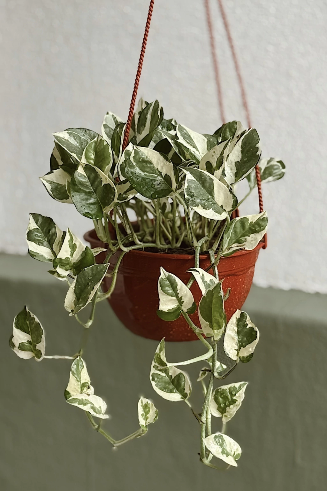
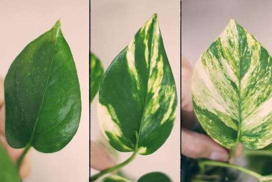
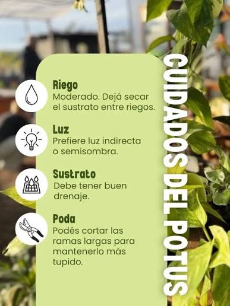

• Nombre científico: Epipremnum aureum
• Nombres comunes: Potus, Potos, Teléfono, Escindapso.
• Familia: Araceae (Aráceas).
• Origen: Islas de la Sociedad (Polinesia Francesa), aunque hoy está naturalizado en regiones tropicales de todo el mundo.
• Tipo de planta: Trepadora o colgante perenne.
• Hojas: Tienen forma de corazón, son perennes, alternas y de textura coriácea (ligeramente de cuero). En interiores suelen medir entre 5 y 15 cm. Presentan una coloración verde brillante, frecuentemente variegada con manchas blancas, cremas o amarillas.
• Tallos: Flexibles y delgados que emiten raíces aéreas en los nudos. Estas raíces les permiten trepar de forma natural sobre árboles o tutores .
• Crecimiento: Muy rápido en condiciones óptimas, llegando a alcanzar varios metros de longitud.

• Luz: Requiere luz brillante pero indirecta. Tolera la sombra, pero las variedades con manchas (variegadas) perderán el color amarillento y se volverán completamente verdes si les falta luz. Evitar el sol directo porque quema las hojas.
• Riego: Moderado. El exceso de agua es su peor enemigo (pudre las raíces). Se recomienda regar solo cuando los primeros centímetros del sustrato estén completamente secos. En invierno, reducir drásticamente el riego.
• Temperatura: Ideal entre 15 °C y 25 °C. No tolera las heladas ni temperaturas inferiores a los 10 °C.
• Sustrato: Necesita una mezcla con excelente drenaje (por ejemplo, tierra para plantas de interior combinada con perlita).
